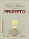

//Specify optional button target: "_new" for new window, or name of FRAME target (ie "myframe")
var buttontarget=""
function change(e, color){
var el=window.event? event.srcElement: e.target
if (el.tagName=="INPUT"&&el.type=="button")
el.style.backgroundColor=color
}
function jumpto2(url){
if (buttontarget=="")
window.location=url
else if (buttontarget=="_new")
window.open(url)
else
parent[buttontarget].location=url
}
//-->
- IN UNA CANTINA NEL CENTRO STORICO DI SIENA -
- una collezione di bottiglie di vino -

Fra le innumerevoli bellezze di Siena che sono davanti agli occhi di tutti, ce ne sono molte altre nascoste, ma non per questo meno affascinanti, come le cantine ricavate sotto ai prestigiosi e agli imponenti palazzi della città.
Tra queste c'è anche la cantina di Helen e Orlando che si trova in Banchi di Sotto, la centralissima via che scorre parallela a Piazza del Campo.
Superato l'ingresso che è a piano strada, si incontra un antico pozzo rifinito con del marmo bianco che a suo tempo serviva a raccogliere le acque piovane provenienti dal vicino vicolo. Questo pozzo si trova appoggiato a un muro di pietre bianche, risalente all'anno Mille, che costituiva il basamento di una torre.
Se scendiamo alcuni gradini, si entra nella vera e propria cantina, dove sono esposte circa 900 bottiglie di vino a partire dal 1934, di cui 510 di Chianti Classico "Gallo Nero", tutte di produttori diversi, compresi quelli che hanno cessato da tempo la produzione.
Detta cantina non è aperta al pubblico, esclusi i nostri ospiti, per cui non è possibile assaggiare i vini.
Per ulteriori informazioni oppure se avete qualche bottiglia da vendere, da scambiare o da regalare, vi preghiamo di contattarci.
Poichè non siamo interessati ad acquistare dei doppioni, vi invitiamo, prima di scrivere, a consultare l'elenco delle bottiglie da noi possedute, cliccando sul bottone rosso che si trova qua sotto. Grazie
 - una collezione di bottiglie di vino -
- una collezione di bottiglie di vino -


 ALTRE FOTO DELLA CANTINA
ALTRE FOTO DELLA CANTINA